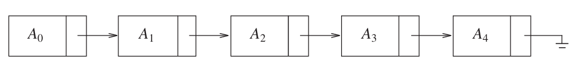
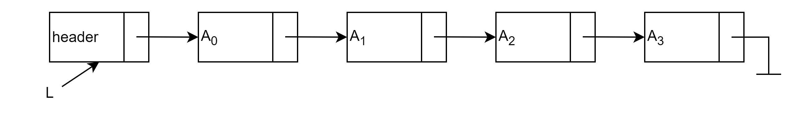
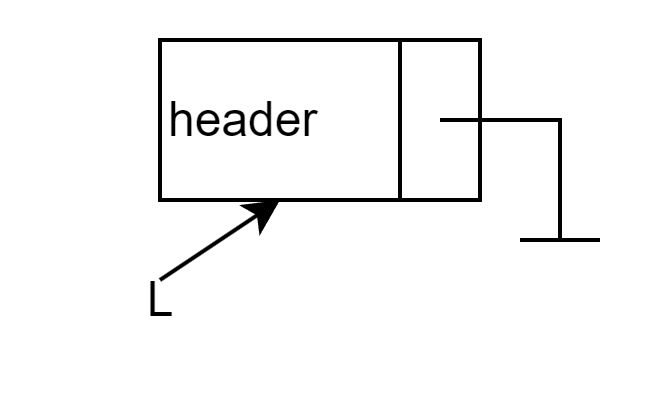
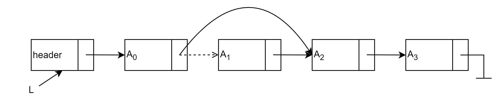
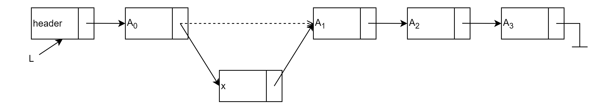
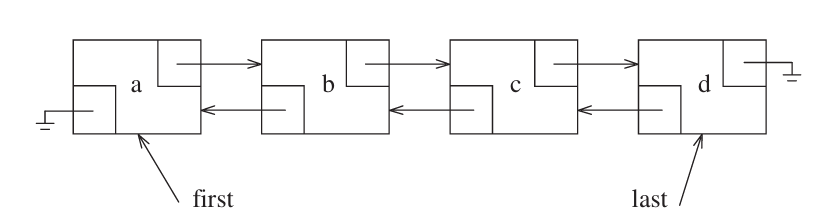

List, Stack and Queue
Abstract Data Types
抽象数据类型(abstract data types)是带有一组操作的对象的集合，ADT本身不包含操作的实现，可以将其看作是模块化的一种延伸
The List ADT
对于形式为 \(A_0, A_1, A_2,\cdots,A_{n-1}\) 的线性表(linear list)，它的大小为 \(N\)
大小为 0 的线性表被称为空列表(empty list)
除空列表以外的任意线性表，\(A_i\) 都在 \(A_{i-1}(i<N)\) 的后面（后继，succeeds）,而 \(A_{i-1}\) 在 \(A_{i}\) 的前面（前驱，precedes）.而 \(A_0\) 的前驱和 \(A_{n-1}\) 的后继是没有定义的 线性表中的元素 \(A_i\) 的位置为 \(i\)
线性表主要包括以下这些操作：
printList:打印线性表中的所有元素makeEmpty:将线性表变为空线性表find:返回元素第一次出现的位置insert:将元素插入到指定的位置remove:删除指定的位置的元素next:返回指定位置的元素的后继previous:返回指定位置的元素的前驱
Simple Array Implementation of List
使用数组就可以实现上面的所有操作
其中，printList 需要线性时间，insert 和 remove 取决于元素的位置，最差的情况为 \(O(N)\)
数组的大小是固定的，但 C++标准库提供了一个可以动态调整大小的类模板 vector
下面是它简化后的实现1为了不与标准库的 vector 混淆，这里将其命名为 Vector
Vector的实现
template<typename T>
class Vector
{
private:
int theSize;
int theCapacity;
T* elems;
public:
static const int SPACECAPACITY = 16;
explicit Vector(int size = 0) : theSize(size), theCapacity(size + SPACECAPACITY)
{
elems = new T[theCapacity];
}
~Vector()
{
delete[] elems;
}
void resize(int newSize)
{
if (newSize > theCapacity)
reverse(theCapacity * 2);
theSize = newSize;
}
void reverse(int newCapacity)
{
if (newCapacity < theSize)
return;
T* newElems = new T[newCapacity];
for (int i = 0; i < theSize; ++i)
{
newElems[i] = std::move(elems[i]);
}
theCapacity = newCapacity;
std::swap(elems, newElems);
delete[] newElems;
}
T operator[](int index)
{
return elems[index];
}
bool empty()
{
return theSize == 0;
}
void clear()
{
theSize = 0;
}
void push_back(T& elem)
{
if (theSize == theCapacity)
reverse(theCapacity* 2 + 1);
elems[theSize++] = elem;
}
void pop_back()
{
theSize--;
}
};
如果需要频繁的进行插入和删除，那么数组实现的性能将不容乐观。因此我们引入了链表(linked list)
Simple Linked Lists
链表由一系列包含元素和后继节点链接的节点组成，这些节点在内存中不一定相邻。我们将这个指向后继元素的链接称为 next,最后一个元素的 next 指向 nullptr.如下图所示

虽然上面的描述已经能够完成所有的操作，但是这会出现三个问题：
- 没有一个足够明确的方式在链表前面插入元素
- 删除链表的第一个元素是一个特殊情况，因为需要改变链表的起始
- 删除算法需要我们跟踪要删除的那个元素之前的元素
只需要在链表的最前面增加一个哨兵节点就可以解决这三个问题，如下图所示

我们将链表的节点定义如下
template<typename T>
struct Node
{
T element;
Node* next;
Node() = default;
Node(T elem) : element(elem), next(nullptr) { }
};
template<typename T>
using PtrToNode = Node<T>*;
链表的 ADT 定义为
template<typename T>
class List
{
private:
PtrToNode<T> header;
int size = 0;
public:
List();
~List() { makeEmpty(); delete header; }
void insert(int pos, const T& val);
void remove(int pos);
int find(const T& val) const;
void makeEmpty();
void printList() const;
int getSize() const { return size; }
bool empty() const { return size == 0; }
};
接下来来看这些的操作的实现细节
只需要将哨兵节点的 next 指向 nullptr 即可,如下图所示

template<typename T>
List<T>::List()
{
header = new Node<T>();
header->next = nullptr;
}
只需要沿 next 链接找到要删除的元素之前的元素，将它的 next 指向要删除的元素的后继节点，再释放被删除的节点即可,如下图所示

template<typename T>
void List<T>::remove(int pos)
{
if (pos < 0 || pos >= size)
throw std::out_of_range("List::remove: pos out of range");
PtrToNode<T> curr = header;
for (int i = 0; i < pos; ++i)
curr = curr->next;
PtrToNode<T> victim = curr->next;
curr->next = victim->next;
delete victim;
--size;
}
有了哨兵节点，在链表最前面插入元素也不再是特殊情况：insert 将元素插入到位置 pos，只需要先找到位置 pos-1 的节点（pos 为 0 时即哨兵节点），再把它的新后继指向原来的后继即可，如下图所示

template<typename T>
void List<T>::insert(int pos, const T& val)
{
if (pos < 0 || pos > size)
throw std::out_of_range("List::insert: pos out of range");
PtrToNode<T> curr = header;
for (int i = 0; i < pos; ++i)
curr = curr->next;
PtrToNode<T> node = new Node<T>(val);
node->next = curr->next;
curr->next = node;
++size;
}
从哨兵节点的后继开始逐个比较，返回元素第一次出现的位置，未找到则返回 -1
template<typename T>
int List<T>::find(const T& val) const
{
int pos = 0;
PtrToNode<T> curr = header->next;
while (curr != nullptr)
{
if (curr->element == val)
return pos;
curr = curr->next;
++pos;
}
return -1;
}
沿着 next 链接遍历整个链表即可。makeEmpty 复用 remove(0) 逐个释放节点，省去重复的释放逻辑
template<typename T>
void List<T>::printList() const
{
PtrToNode<T> curr = header->next;
while (curr != nullptr)
{
std::cout << curr->element << " ";
curr = curr->next;
}
std::cout << std::endl;
}
template<typename T>
void List<T>::makeEmpty()
{
while (!empty())
remove(0);
}
Double Linked Circular List
双向循环链表是一种在单向循环链表的基础上，每个节点都有前驱和后继指针的链表。它可以在任意位置插入和删除元素，同时支持从任意位置遍历链表。如下图所示

它的节点定义如下
template<typename T>
struct Node
{
T element;
Node* prev;
Node* next;
Node() = default;
Node(T elem) : element(elem), prev(nullptr), next(nullptr) { }
};
栈(stack)是一个插入与删除都只能在一个位置进行的线性表，这个位置被称为栈顶。
Stack Model
栈可以看作是一个后进先出(last in, first out, LIFO)的线性表
栈的两个基本操作是 push (类似于 insert)和 pop (类似于 remove);除此之外，还可以使用 top 来查看栈顶元素，对空栈调用 pop 或 top 将会导致错误
Implementation of Stacks
因为栈是一个线性表，因此任何线性表都可以实现栈的功能。两种主流的实现方式是使用链表和数组
Linked List Implementation
使用一个单链表，但是只在链表的头部进行操作，这里我使用 C++标准库的 forward_list 来实现
template<typename T>
class Stack
{
private:
std::forward_list<T> elems;
int size = 0;
public:
bool empty() const{ return size == 0; }
int size() const { return size; }
void push(const T& elem)
{
elems.push_front(elem);
++size;
}
void pop()
{
if (empty())
throw std::runtime_error("the stack is empty");
elems.pop_front();
--size;
}
T& top()
{
if (empty())
throw std::runtime_error("the stack is empty");
return elems.front();
}
};
Array Implementation
template<typename T>
class Stack
{
private:
static constexpr std::size_t N = 16;
T elems[N];
int sz = 0;
public:
bool empty() const{ return sz == 0; }
int size() const { return sz; }
void push(const T& elem)
{
if (sz == N)
throw std::runtime_error("the stack is full");
elems[sz++] = elem;
}
void pop()
{
if (empty())
throw std::runtime_error("the stack is empty");
--sz;
}
T& top()
{
if (empty())
throw std::runtime_error("the stack is empty");
return elems[sz - 1];
}
};
Applications
Queue ADT
-
这里省略原书代码中的一些 C++特性，如移动语义和迭代器 ↩